Inference to Tensors
Implemented Batch 2 of the curriculum and fixed the Batch 1 visual/PDF layout issues with HTML legends, numbered callouts, and print-safe captions. Final app polish is visible as v0.9.1.
What Changed
- Implemented full cards for Inference, Prompt vs Response, Tokenization, Token IDs, Embeddings, Vectors, and Tensors.
- Bumped the visible app version to
v0.9.0. - Applied a v0.9.1 polish fix for duplicate React keys in repeated Prompt vs Response token cards.
- Moved lessons 8-14 into the complete lesson schema: definition, core explanation, where it happens, durable/temp, prompt/response, metaphor, Brain Bridge, misconception, visual aid, and checkpoint.
- Improved Batch 1 visuals for Rationalists vs Empiricists, Training, Overfitting, and Alignment.
- Updated the glossary for tokenizer, tokenization, embedding table, distributed representation, activation, hidden state, and weight tensor.
- Updated the default lesson-card PDF path to
docs/review/prompt-life-lesson-cards-v0-9.pdf. - Generated the v0.9 lesson-card PDF at
docs/content-inventory/prompt-life-lesson-cards-v0-9-batch-2.pdf.
How To Run Locally
From this repo:
cd ~/Desktop/promptlifenpm installnpm run dev
Open http://localhost:5173/. For same-Wi-Fi phone testing, run npm run dev -- --host 0.0.0.0 and open the Network URL Vite prints.
Verification
npm install: passed.npm run typecheck: passed.npm run build: passed.npm run export:lesson-pdf: passed.npm run export:lesson-cards: passed.- GitHub Pages deploy from
main: passed. - Mobile overflow audit: passed at 320px, 390px, and 430px.
- Review route: 28 lesson cards, Batch 2 present.
- PDF sample page: no clipped visual, vertical caption, or unreadable label found.
- No new games, Three.js, or heavy 3D library added.
Files Changed
README.md, package.json, scripts/export-lesson-pdf.mjs, src/components/VisualAids.tsx, src/data/content.ts, src/main.tsx, src/styles/global.css, docs/REVIEW_NOTES.md, Batch 2 curriculum docs, v0.9 lesson-card PDFs, and v0.9 screenshot artifacts.
Next Three v0.10 Improvements
- Implement Batch 3 for Attention, MLP, Layers, and Hidden States as a connected transformer-workday section.
- Add source citations or a bibliography layer for Batch 1 and Batch 2 before broader publication.
- Add an automated screenshot/overflow script to the repo so future visual-aid changes can be checked repeatably.
Screenshots
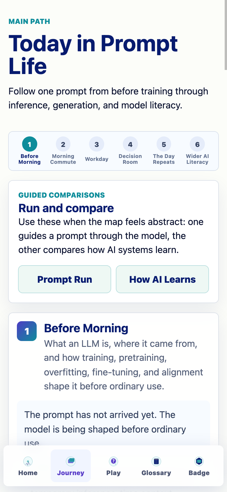
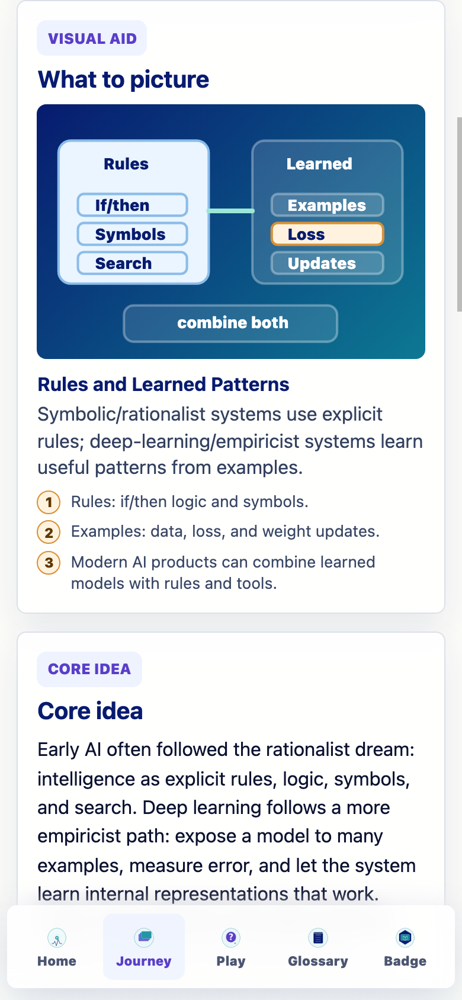
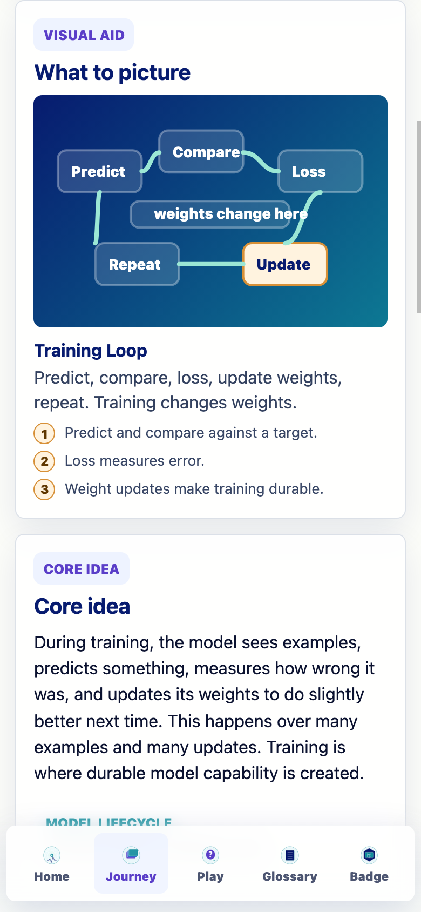
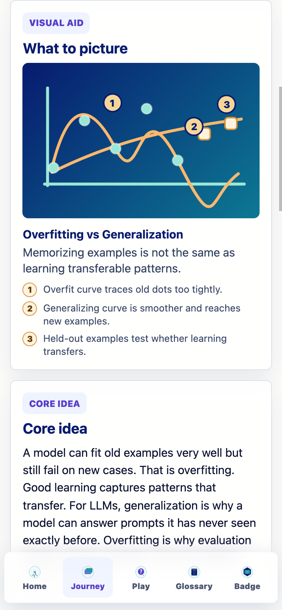
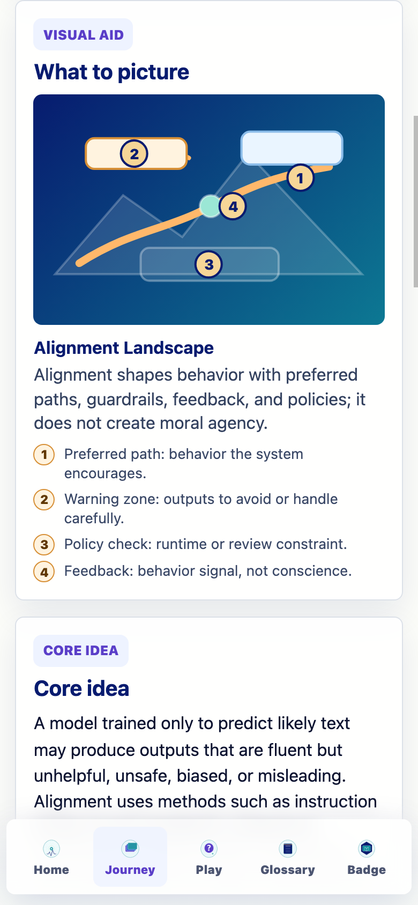
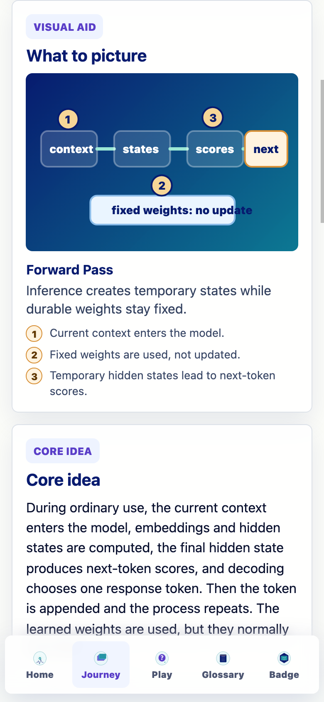
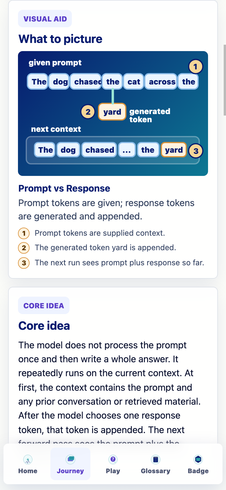
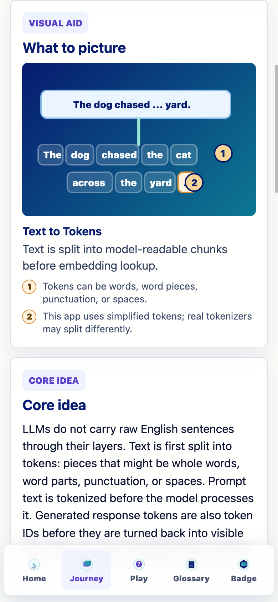
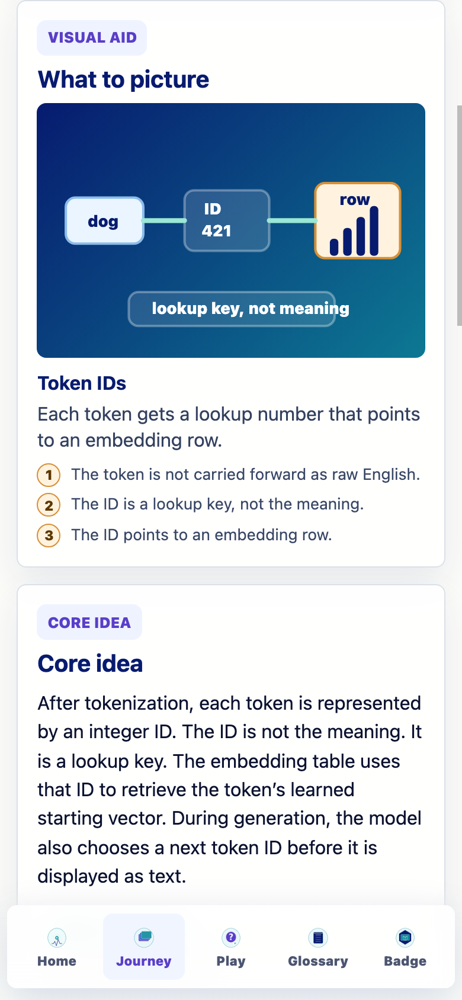
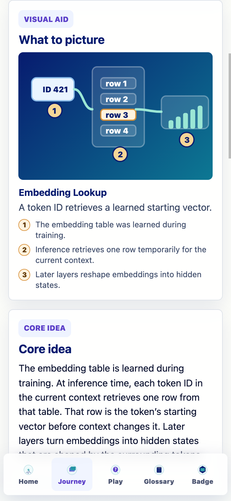
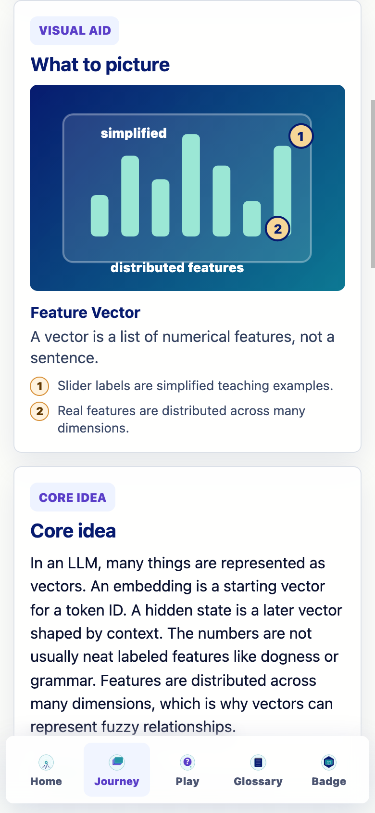
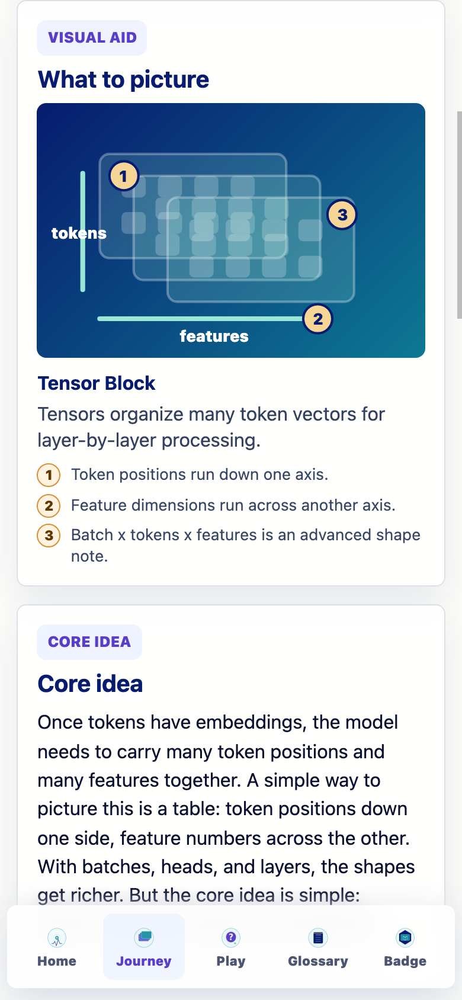
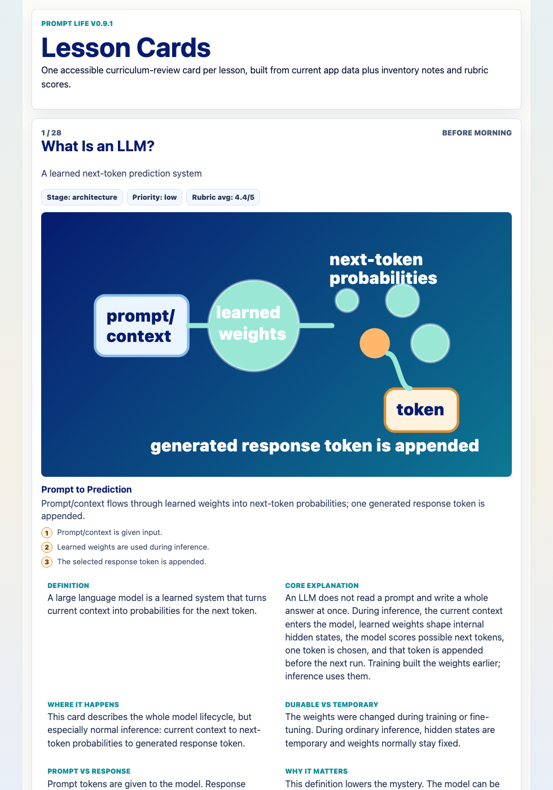
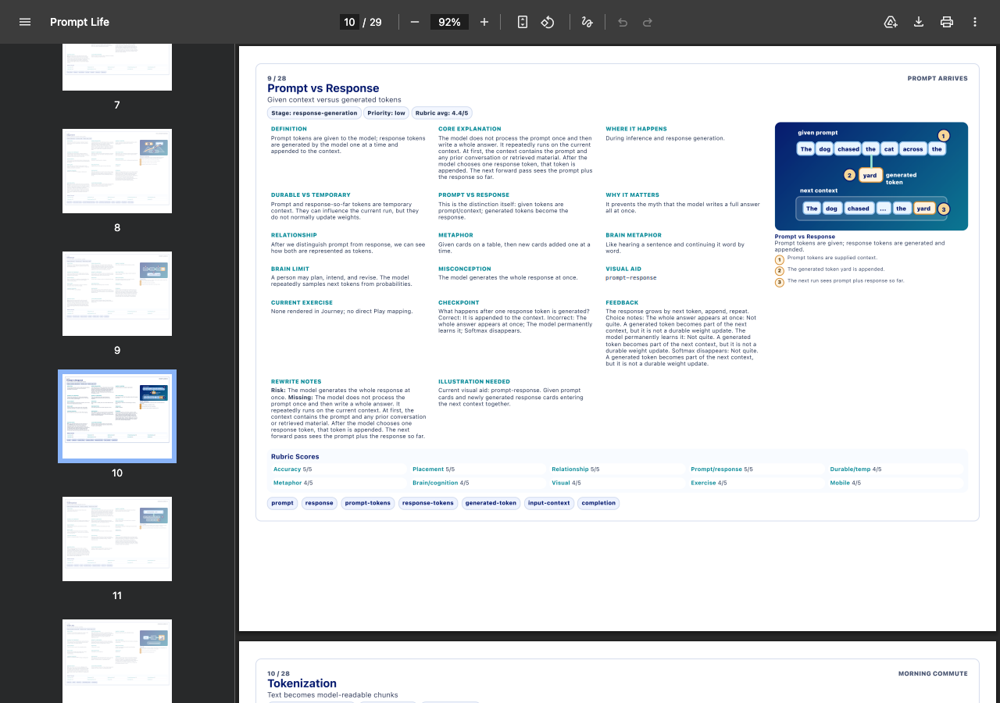